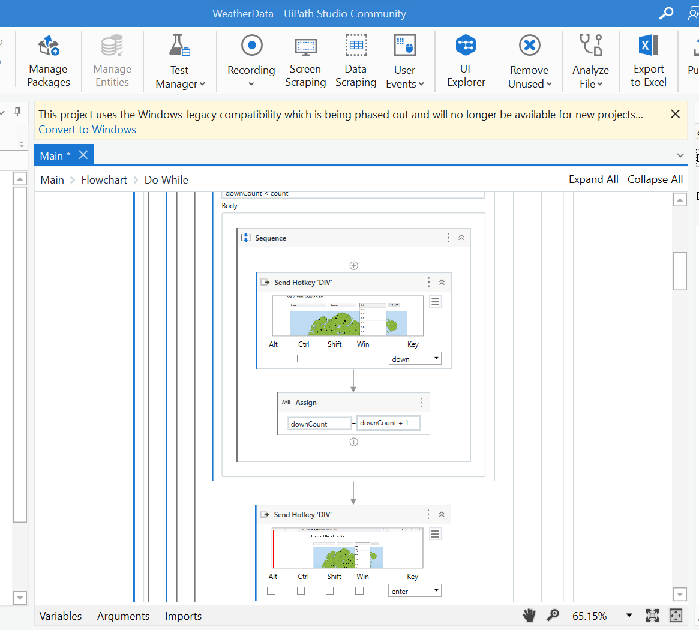

pacman::p_load(readr, tidyverse, forecast, janitor, fs, visdat)Data Preparation
1 Overview
This page will explain in detail how we extract the data from the Meteorological Service Singapore (MSS) website and how we clean the data for our subsequent analysis.
2 Data Extraction
On the MSS Historical Daily Records page, we are able to select the weather station, month and year to display. After that, we can click on the CSV option to download the data.
For this project, we will analyse the historical temperature and rainfall data collected by MSS based on the 18 weather stations (Table 1).
The selected stations with complete datasets from 1980 onwards provide a long-term perspective on climate trends, which is crucial for accurate modelling and prediction. Automated instruments from 2009 enhance data reliability and allow continuous monitoring without manual intervention gaps.
As there are 42 years of monthly data to download for each station, my team has written a Robotic Process Automation script using UiPath software to download all the necessary data. In total, we have 5,552 CSV files downloaded.

3 Data Preparation
3.1 Installing R packages
The code below uses p_load() of the Pacman package to check if all the required packages are installed on the laptop. If they are, then they will be launched into the R environment.
| Package | Description |
| tidyverse | A collection of core packages designed for data science used extensively for data preparation and wrangling. |
| lubridate | For manipulating date-times. |
| janitor | For quick formatting of data frame columns. |
| fs | For retrieving a list of file names in our directory for import into R |
| visdat | For checking missing values in a dataframe |
3.2 Importing data
Let’s read all the 5,547 CSV files downloaded for the 18 weather stations that have records from the year 1980 onwards.
dir_ls()function from the fs package in R to list filenames in our directory where we have saved the monthly historical records.map_df()function from the purrr package is used to iterate over each file in the directory.localeargument inread_csv()is to specify the encoding as Latin-1, as some of the headers contain special characters, like the degree symbol (°). The Latin-1 encoding ensures R can read and process such special characters.col_typesargument imports all columns as character data type.clean_names()of the janitor package converts into snake case and transliterates special characters such as the degree symbol (°) to ASCII.
filenames <- fs::dir_ls("data/raw_data/")
# Read all files and clean the column names
data <- filenames %>%
map_df(~ read_csv(.x,
locale = locale(encoding = "latin1"),
col_types = cols(.default = "character")
) %>%
janitor::clean_names()
)
glimpse(data)
Note
All the 18 weather stations have a total of 168,836 records.
The data shows that there are two sets of variables for mean, maximum, and minimum temperature records:
mean_temperature_c, maximum_temperature_c, and minimum_temperature_c
mean_temperature_a_c, maximum_temperature_a_c, and minimum_temperature_a_c
Some year’s data are in the first set of variables and others are in the second set of variables. This might happen during clean_names() where there is a minor difference in the column names from different files.
It will be meaningful to also analyse weather data by region in Singapore. Hence, we also searched for each weather station’s region on public websites like the HDB website and data.gov.sg. Let’s import the region information now.
region <- read_csv("data/Region.csv")
glimpse(region)Rows: 18
Columns: 2
$ Station <chr> "Admiralty", "Ang Mo Kio", "Boon Lay (East)", "Changi", "Choa …
$ Region <chr> "North", "North-East", "West", "East", "West", "West", "East",…3.3 Data Wrangling
3.3.1 Remove extra columns
Let’s use the coalesce() function to copy the values from the second set of temperature values to the first set and then deselect the second set of columns. We are also not focusing on the wind speed variables, hence we will deselect the 2 variables on wind speed.
data$mean_temperature_c <- coalesce(data$mean_temperature_c,
data$mean_temperature_a_c)
data$maximum_temperature_c <- coalesce(data$maximum_temperature_c,
data$maximum_temperature_a_c)
data$minimum_temperature_c <- coalesce(data$minimum_temperature_c,
data$minimum_temperature_a_c)
data %>%
select(-c(mean_temperature_a_c,
maximum_temperature_a_c,
minimum_temperature_a_c,
mean_wind_speed_km_h,
max_wind_speed_km_h))
glimpse(data)3.3.2 Remove weird characters
There are some weird characters (‘097’) in the data frame. Let’s replace them with NA.
data <- data %>%
mutate_all(~ ifelse(. == "\u0097", NA, .))
glimpse(data)3.3.3 Tidy the data
Finally, let’s clean up the weather data and create a column for date, change the necessary columns to numeric, and shorten the column names for simplicity.
weather <- data %>%
mutate(station = station,
year = as.numeric(year),
Date = make_date(year = year, month = month, day = 1),
month = lubridate::month(Date, label = TRUE),
day = as.numeric(day),
daily_rainfall_total_mm = as.numeric(daily_rainfall_total_mm),
highest_30_min_rainfall_mm = as.numeric(highest_30_min_rainfall_mm),
highest_60_min_rainfall_mm = as.numeric(highest_60_min_rainfall_mm),
highest_120_min_rainfall_mm = as.numeric(highest_120_min_rainfall_mm),
mean_temperature_c = as.numeric(mean_temperature_c),
maximum_temperature_c = as.numeric(maximum_temperature_c),
minimum_temperature_c = as.numeric(minimum_temperature_c)) %>%
rename(
Station = station,
Year = year,
Month = month,
Day = day,
Rainfall = daily_rainfall_total_mm,
Rainfall30 = highest_30_min_rainfall_mm,
Rainfall60 = highest_60_min_rainfall_mm,
Rainfall120 = highest_120_min_rainfall_mm,
MeanTemperature = mean_temperature_c,
MaxTemperature = maximum_temperature_c,
MinTemperature = minimum_temperature_c
) %>%
subset(select = -c(mean_temperature_a_c,
maximum_temperature_a_c,
minimum_temperature_a_c,
mean_wind_speed_km_h,
max_wind_speed_km_h))3.3.4 Merge datasets
Let’s join the weather data with its region information using the common variable ‘Station’.
weather <- merge(weather, region, by= "Station")
glimpse(weather)3.3.5 Create subsets of data
Let’s create subsets of weather data for only Temperature or Rainfall and save them as RDS files for easy loading when we are developing for the subsequent analysis.
Temp_YM <- weather %>%
group_by(Station, Region, Year, Month) %>%
reframe(Date = Date,
MeanTemp = round(mean(MeanTemperature, na.rm = TRUE),1),
MaxTemp = round(max(MaxTemperature, na.rm = TRUE),1),
MinTemp = round(min(MinTemperature, na.rm = TRUE),1) ) %>%
distinct() %>%
ungroup() %>%
filter(!is.na(MeanTemp))Error in eval(expr, envir, enclos): object 'weather' not foundwrite_rds(Temp_YM, "data/temperature.rds")Error in eval(expr, envir, enclos): object 'Temp_YM' not foundRainfall_YM <- weather %>%
group_by(Station, Region, Year, Month) %>%
reframe(Date = Date,
TotalRainfall = round(sum(Rainfall, na.rm = TRUE),1),
TotalRainfall30 = round(sum(Rainfall30, na.rm = TRUE),1),
TotalRainfall60 = round(sum(Rainfall60, na.rm = TRUE),1),
TotalRainfall120 = round(sum(Rainfall120, na.rm = TRUE),1)) %>%
distinct() %>%
ungroup() %>%
filter(!is.na(TotalRainfall))Error in eval(expr, envir, enclos): object 'weather' not foundwrite_rds(Rainfall_YM, "data/rainfall.rds")Error in eval(expr, envir, enclos): object 'Rainfall_YM' not foundCheck to ensure there is no missing data in Temp_YM and Rainfall_YM.
vis_miss(Temp_YM)Error in eval(expr, envir, enclos): object 'Temp_YM' not foundvis_miss(Rainfall_YM)Error in eval(expr, envir, enclos): object 'Rainfall_YM' not foundFinally, we create further subsets to be used in Confirmatory Data Analysis:
temperature <- read_rds("data/temperature.rds")
Temp_Annual <- temperature %>%
group_by(Station, Region, Year) %>%
summarise(Avg_Mean_Temp = round(mean(MeanTemp, na.rm = TRUE),1),
Avg_Max_Temp = round(mean(MaxTemp, na.rm = TRUE),1),
Avg_Min_Temp = round(mean(MinTemp, na.rm = TRUE),1),
Max_Temp = round(max(MaxTemp, na.rm = TRUE),1),
Min_Temp = round(min(MinTemp, na.rm = TRUE),1)) %>%
distinct() %>%
ungroup() %>%
filter(!is.na(Avg_Mean_Temp))
write_rds(Temp_Annual, "data/temp_annual.rds")
Temp_Monthly <- temperature %>%
group_by(Station, Region, Year, Month) %>%
summarise(Avg_Mean_Temp = round(mean(MeanTemp, na.rm = TRUE),1),
Avg_Max_Temp = round(mean(MaxTemp, na.rm = TRUE),1),
Avg_Min_Temp = round(mean(MinTemp, na.rm = TRUE),1),
Max_Temp = round(max(MaxTemp, na.rm = TRUE),1),
Min_Temp = round(min(MinTemp, na.rm = TRUE),1)) %>%
distinct() %>%
ungroup() %>%
filter(!is.na(Avg_Mean_Temp))
write_rds(Temp_Monthly, "data/temp_monthly.rds")
rainfall <- read_rds("data/rainfall.rds")
Rainfall_Annual <- rainfall %>%
group_by(Station, Region, Year) %>%
reframe(Total_Rf = round(sum(TotalRainfall, na.rm = TRUE),1),
Total_Rf_30 = round(sum(TotalRainfall30, na.rm = TRUE),1),
Total_Rf_60 = round(sum(TotalRainfall60, na.rm = TRUE),1),
Total_Rf_120 = round(sum(TotalRainfall120, na.rm = TRUE),1),
Avg_Total_Rf = round(mean(TotalRainfall, na.rm = TRUE),1),
Avg_Total_Rf30 = round(mean(TotalRainfall30, na.rm = TRUE),1),
Avg_Total_Rf60 = round(mean(TotalRainfall60, na.rm = TRUE),1),
Avg_Total_Rf120 = round(mean(TotalRainfall120, na.rm = TRUE),1),
Min_Total_Rf = round(min(TotalRainfall, na.rm = TRUE),1),
Max_Total_Rf = round(max(TotalRainfall, na.rm = TRUE),1)) %>%
distinct() %>%
ungroup() %>%
filter(!is.na(Total_Rf))
write_rds(Rainfall_Annual, "data/rf_annual.rds")
Rainfall_Monthly <- rainfall %>%
group_by(Station, Region, Year, Month) %>%
reframe(Total_Rf = round(sum(TotalRainfall, na.rm = TRUE),1),
Total_Rf_30 = round(sum(TotalRainfall30, na.rm = TRUE),1),
Total_Rf_60 = round(sum(TotalRainfall60, na.rm = TRUE),1),
Total_Rf_120 = round(sum(TotalRainfall120, na.rm = TRUE),1),
Avg_Total_Rf = round(mean(TotalRainfall, na.rm = TRUE),1),
Avg_Total_Rf30 = round(mean(TotalRainfall30, na.rm = TRUE),1),
Avg_Total_Rf60 = round(mean(TotalRainfall60, na.rm = TRUE),1),
Avg_Total_Rf120 = round(mean(TotalRainfall120, na.rm = TRUE),1),
Min_Total_Rf = round(min(TotalRainfall, na.rm = TRUE),1),
Max_Total_Rf = round(max(TotalRainfall, na.rm = TRUE),1)) %>%
distinct() %>%
ungroup() %>%
filter(!is.na(Total_Rf))
write_rds(Rainfall_Monthly, "data/rf_monthly.rds")